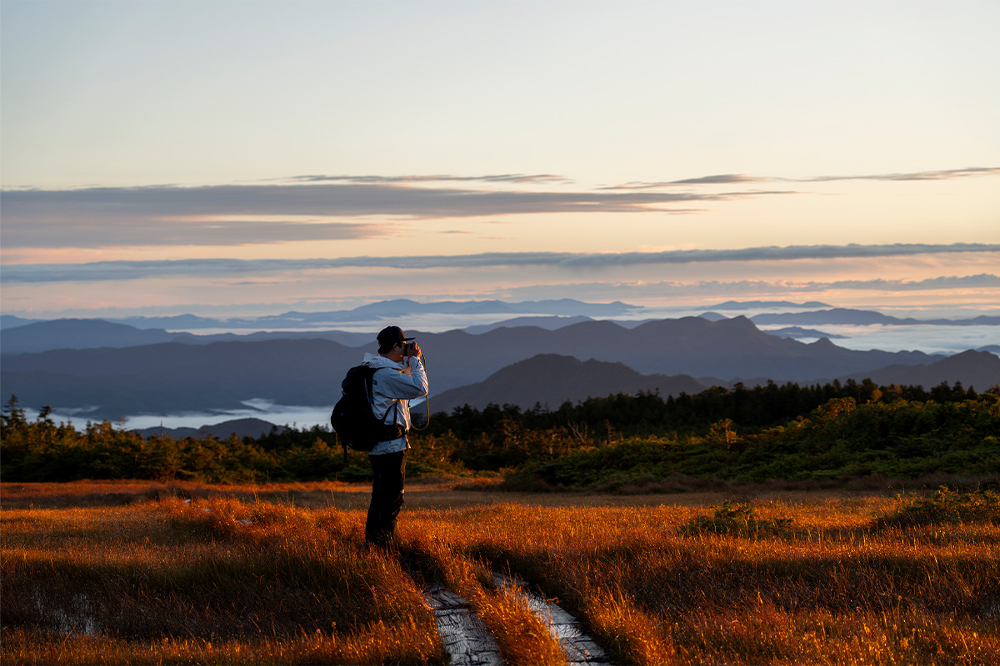
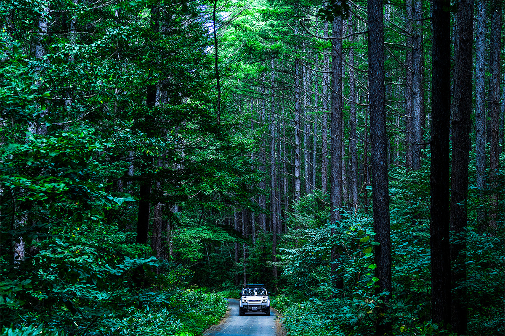
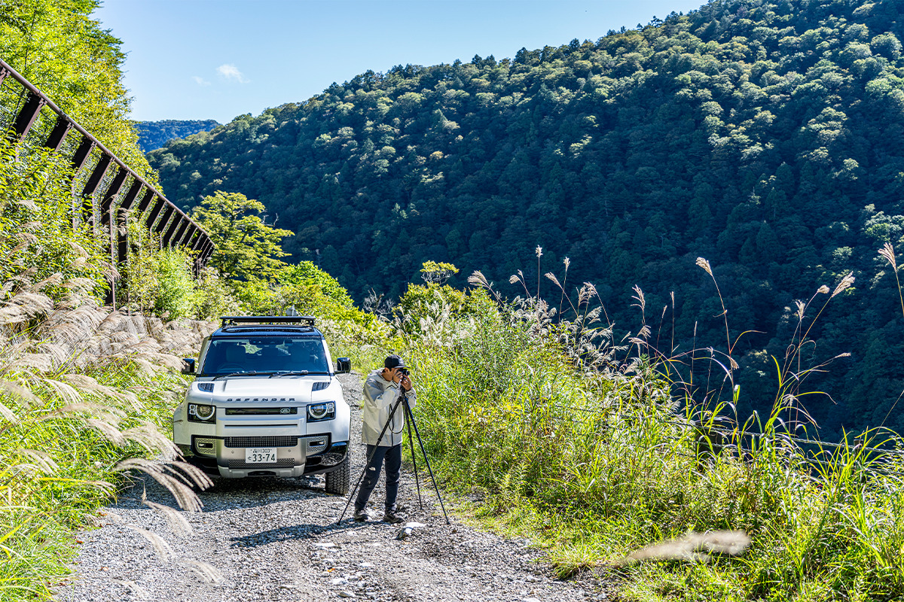
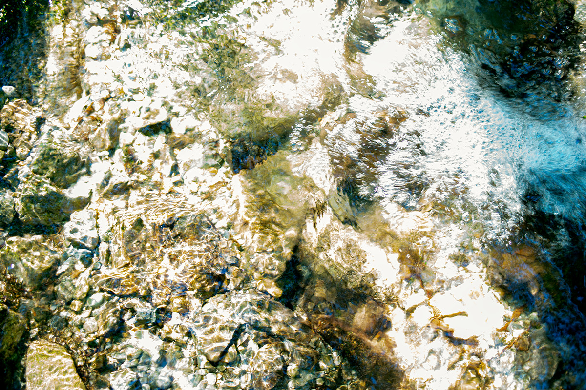
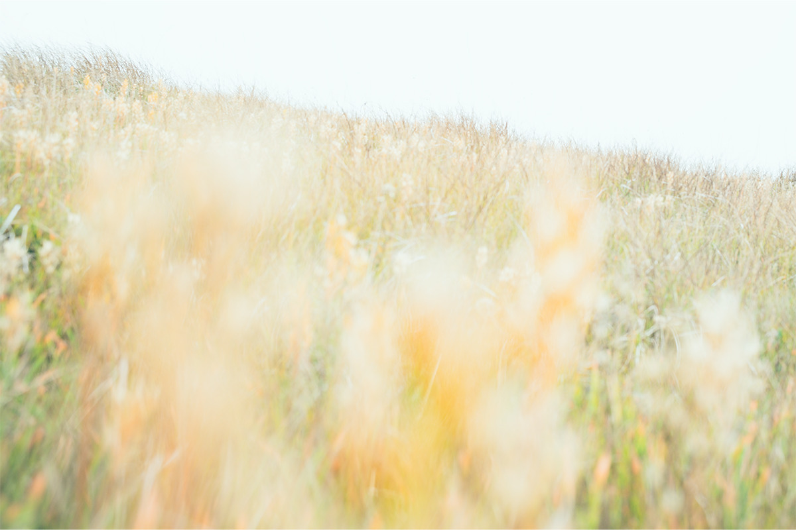
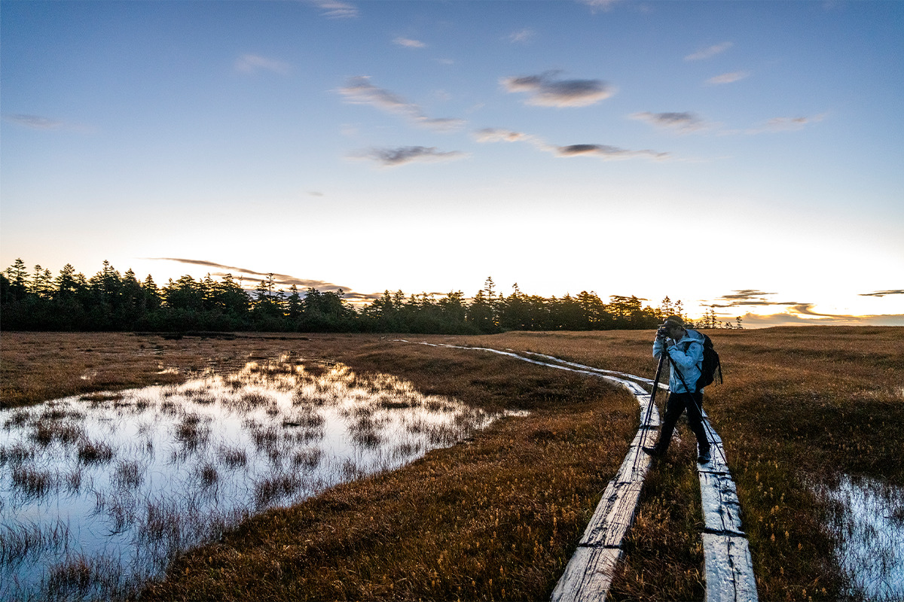
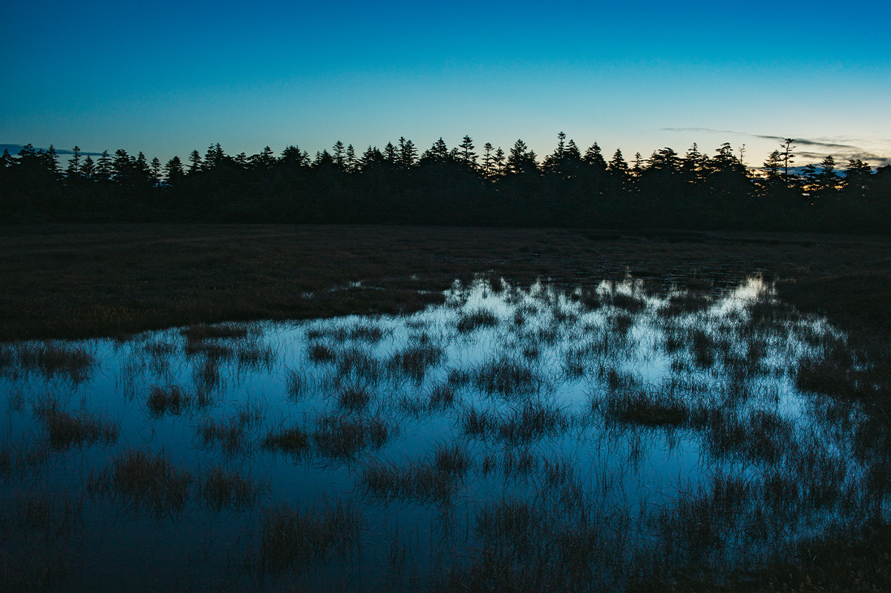
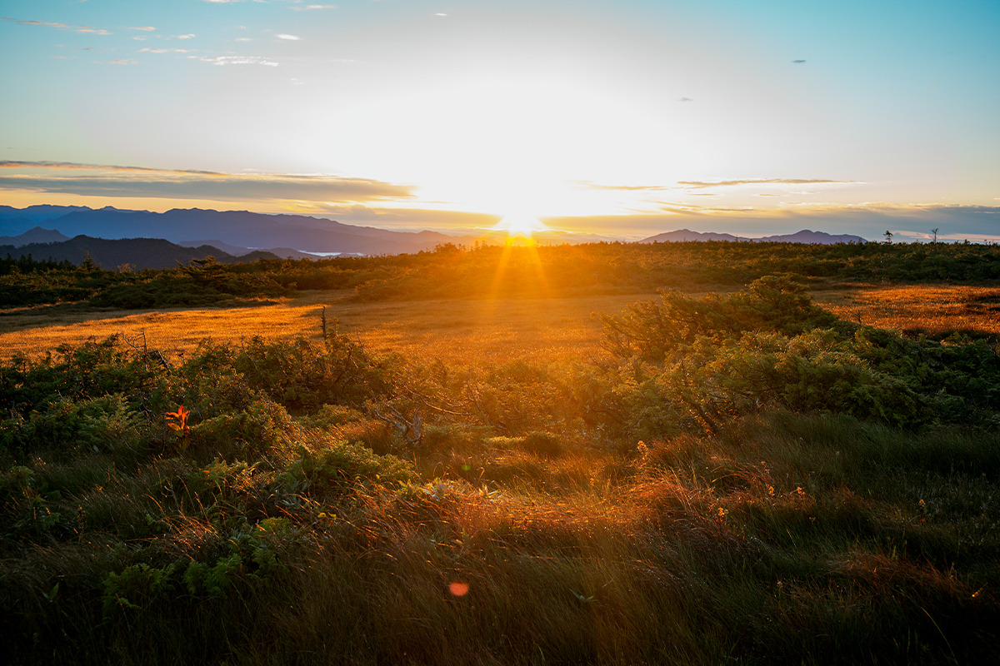

Префектура Фукусима · гора Тасиро · природа
Гора Тасиро: по лесной дороге к болоту на вершине, где встречают рассвет

На восточном краю национального парка Одзе, на юге префектуры Фукусима, стоит гора Тасиро с плоской вершиной, на которой раскинулось высокогорное болото. Путь к нему начинается с лесной грунтовки, а заканчивается рассветом над морем облаков.
Место
Болото на высоте 1926 метров
Гора Тасиро поднимается на 1926 метров. Леса на горе принадлежат торговой компании Mitsui & Co., которая занимается их охраной; часть этих лесов входит в национальный парк Одзе, а на вершине есть и государственный лес. Главное чудо горы наверху: вместо острого пика здесь плоская вершина, а на ней высокогорное болото. Такой рельеф редкость даже в мировом масштабе.
Здешние места славятся редкими высокогорными растениями. Гора Тасиро входит в список «100 цветочных гор Японии», здесь растут эндемики Японии и другие редкие виды. Леса на склонах к тому же охраняются как защитные: они питают горные источники.
В 2024 году сюда приехал фотограф-путешественник, который снимает самые труднодоступные уголки планеты и в 2021 году поднялся на Эверест (8848 метров). На горе Тасиро он уже бывал, но ещё до того, как взял в руки камеру, и на этот раз хотел снять болото на вершине.
«Я обычно езжу туда, где лес давно кончился и даже бактериям трудно выжить, как на Эвересте. Японские горы совсем другие: лес глубокий, природа щедрая, и подниматься здесь просто приятно»
фотограф
Дорога
Десять километров грунтовки
Для этого фотографа дорога к цели тоже часть работы. Однажды в пустыне Намиб в Намибии он пять часов ехал на машине, пока дорога не кончилась, а потом ещё шесть часов шёл пешком, чтобы увидеть пейзаж, которому, по преданию, около 80 миллионов лет. Снимает он не только конечную точку: если по пути что-то тронуло, он останавливается и сворачивает с маршрута.

Путь к горе Тасиро ведёт со стороны Насусиобары в соседней префектуре Тотиги: по национальной дороге № 121 на север, через нагорье Айдзу-Когэн в префектуру Фукусима, а дальше по горной дороге Курияма-Татэива. Чем глубже в горы, тем круче подъёмы и спуски и тем теснее повороты, и асфальт сменяется грунтом. Примерно через 10 километров грунтовки дорога приводит к стоянке у начала тропы Сарукура, откуда и поднимаются на гору.

Подъём
Ночью через лес
Выходят затемно, в самый глухой час ночи, когда тропа ещё мокрая от росы. Тропа ухоженная, но встречаются и крутые скальные участки. По пути растёт один из самых больших в префектуре Фукусима японских конских каштанов, а вдоль тропы попадаются редкие и исчезающие растения: татэямская горечавка и японская погония.


Подъём через лес занимает около двух часов. На вершину фотограф вышел вместе с рассветом.
Вершина
Рассвет над морем облаков
Болото на вершине занимает около 25 гектаров, и здесь растёт около 400 видов высокогорных растений. Стоило выйти на болото и посмотреть на восток, как из-за гребня гор поднялось солнце: небо постепенно наливалось красным, а внизу медленно колыхалось море облаков.

«Такое не часто увидишь даже по всему миру. Эта призрачная красота, этот особый дух есть только у японских гор, и как японца они трогают меня до глубины души. Я заново понял, что мои корни и мой первый пейзаж где-то здесь, в японских горах»
фотограф


На вершине можно передохнуть в горной хижине, а потом спуститься к стоянке тем же путём.
«Я побывал во многих местах, которые раньше не мог и вообразить, и легко думаю, что дошёл туда сам. Но если оглянуться, туда меня часто привозила машина. В Италии говорят: носи хорошую обувь, она приведёт тебя в хорошие места. Для меня хорошая машина ведёт к пейзажам, которых я ещё не видел»
фотограф
Гора Тасиро, тропа от Сарукуры
- Адрес
- префектура Фукусима, уезд Минамиайдзу, посёлок Минамиайдзу
- Как добраться
- от Насусиобары по национальной дороге № 121 на север через Айдзу-Когэн, затем по горной дороге Курияма-Татэива, последние около 10 км по грунту до стоянки у начала тропы Сарукура. По данным префектуры Фукусима (2021), от отделения посёлка Минамиайдзу в Татэиве до начала тропы около 16 км, 30–40 минут на машине; от тропы до вершины около 2,7 км и около 2 часов пешком; зимой дорога закрыта.
Фото: Хироюки Дзёраку, Юки Уэда.